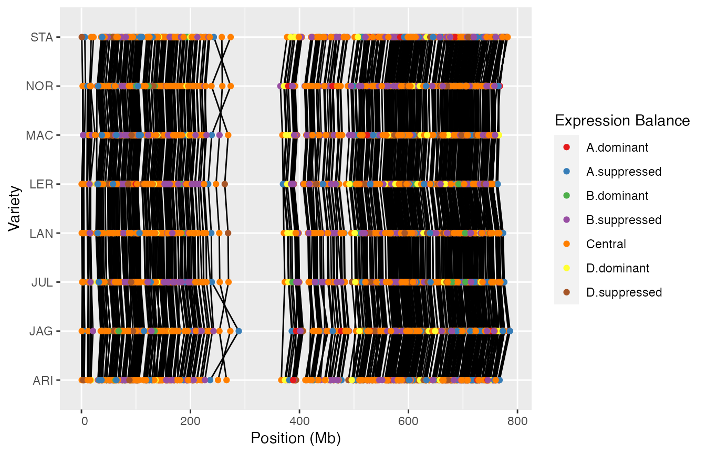
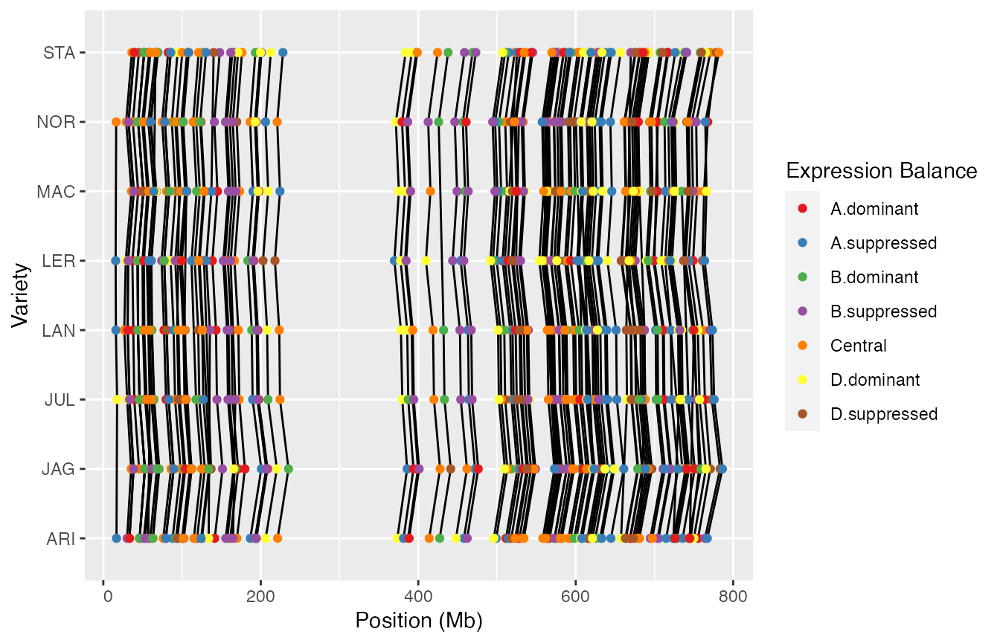

user-guide.Rmdtriad.expression is an R package used to do expression analyses of so called Triads.
The wheat genome has three sub-genomes called A, B, and D.
Triads are sets of three genes, where there is a homolog in each of the three sub-genomes.
triad.expression is not published on CRAN so you will have to install triad.expression yourself from this GitHub repository. But that’s ok, it’s easy enough.
The easiest way to do this is to use the install_github command from the R devtools package like so:
devtools::install_github()If you do not have devtools installed, no problem, that is available through CRAN and so using
install.packages("devtools") in an R session should install it for you.
Once installed, use the package with library.
library(triad.expression)
#> Loading required package: ggplot2
#> Registered S3 methods overwritten by 'ggtern':
#> method from
#> grid.draw.ggplot ggplot2
#> plot.ggplot ggplot2
#> print.ggplot ggplot2
library(dplyr) # dplyr is going to be useful too.
#>
#> Attaching package: 'dplyr'
#> The following objects are masked from 'package:stats':
#>
#> filter, lag
#> The following objects are masked from 'package:base':
#>
#> intersect, setdiff, setequal, unionThe package has some data files included that have been used in our research. This package includes both processed tidy versions, as well as raw files.
Triads are made up of three homologous genes from the A, B, and D sub-genomes of wheat.
This package makes use of, and includes, a dataset that describes these homologies.
To load it for use, simply use data(triad_homology) when the package is loaded, to put it into your environment.
The raw version of this data is in “inst/extdata/170521_pantrans_commonref_homology.csv”.
It is important for some analyses, to know where the genes for each triad are located in the genome.
This data is included in this package for several varieties of wheat.
This data does not include any “chromosome unknown” triads from the annnotation process.
There is one file for each wheat variety.
To load it for use, simply use data(gene_locations) when the package is loaded, to put it into your environment.
The raw versions of these tables are kept in “inst/extdata/triad_locations/”
Analyses in the package make use of gene expression data for the triads.
This data includes both the raw expression values obtained from experiment, as well as a table of metadata about the samples and the experiments they came from.
To get the metadata simply use data(expression_metadata) when the package is loaded, to put it into your environment.
3 datasets are required, the gene expression data and its metadata, and the triad homology information.
All three of these tables are described in the “Included and required data” section.
We will use the ones provided with the package.
?expression_dataNext we can compute the mean expression values for each triad gene, for every level of a factor, we use the function called triad_expression_means_by_factors.
This function takes the expression datasets, and the triad homology information, and a list of metadata column names to use as factor groupings.
For example, in expression_metadata, there is a column called “High.level.variety”, with a level for each variety of wheat.
To compute the mean expression level for each triad gene, for each variety then, we can use the function like so, passing in the expression and homology data, and “High.level.variety” as our factor.
meanExpressionByVariety <- triad_expression_means_by_factors(expression_data, expression_metadata, triad_homology, "High.level.variety")But what if, for example, you had multiple factors? Say you wanted to look at triad expression between varieties, but also for different tissues?
The metadata table has a column called “High.level.tissue”, and so clearly some expression experiments used samples from different wheat tissues. The column has several levels such as “roots”, “leaves/shoots”, etc.
No problem! The function we just used, can handle multiple factors:
meanExpressionByVarietyAndTissue <- triad_expression_means_by_factors(expression_data, expression_metadata, triad_homology, c("High.level.variety", "High.level.tissue"))The resulting table contains the mean expression of each gene, for every combination of factor levels - in this case “High.level.variety” and “High.level.tissue”. Now we can do some other things with it.
Next we have to normalize the data, which is done with normalize_triad_expression_means.
normalizedMeans <- normalize_triad_expression_means(meanExpressionByVarietyAndTissue)By default, this function is able to work out which columns are factors from the previous step (in this instance, “High.level.tissue” and “High.level.variety”) but you can optionally override this should it be necessary (…it probably won’t be).
Once you have normalized mean triad expression data, you can compute each triads distance from the centroids, and from the centroids, assign to each triad, one of 7 expression categories:
cDistances <- triad_balance(normalizedMeans)By default, this function is able to work out which columns are factors from the previous step (in this instance, “High.level.tissue” and “High.level.variety”) but you can optionally override this should it be necessary (…it probably won’t be).
Ok, having gone through how to calculate triad expression statistics, let’s start from the beginning, and compute triad mean expression across varieties, and compute the expression categories from the centroid distances.
data(expression_data)
data(expression_metadata)
data(triad_homology)
meanExpressionByVariety <- triad_expression_means_by_factors(expression_data, expression_metadata, triad_homology, "High.level.variety")
normalizedMeans <- normalize_triad_expression_means(meanExpressionByVariety)
cDistances <- triad_balance(normalizedMeans)Next, we join the chromosomal location information to these distances.
So first we get the genome annotation data included in the package.
data(gene_locations)
distWithLocation <- join_distances_and_annotation(cDistances, gene_locations)Alright, now we have the information, we can do some plotting. Most of this is handled by the loom_plot function, which, depending on how you preprocess some of the data, can allow you to show various things along chromosomes.
We’re going to use it to show the expression differences between triad genes of different varieties.
So first we pick a chromosome and make sure the data only represents that chromosome. This is the first filter statement.
Next we only really want to see genes from triads where there is in fact a difference in expression between varieties. That’s what the group_by and additional filter line are about.
The loom plot accepts the data as the first argument (here provided by the pipe). It then accepts a name of the column to use as the chromosome co-ordinates (in this case “start”), the column to use to plot the y axis (in this case “High.level.variety”), the column to use to connect points (in this case “group_id” - which indicates triad ID), and a column to use to provide colour, in this case the expression type (“clust.description”). We also provide an optional label to use as the Y axis label.
Note this figure may be small or squished to fit the vignette in a small amount of space.
distWithLocation %>%
filter(chr == "chr2A") %>%
group_by(group_id) %>%
filter(n_distinct(clust.description) > 1) %>%
loom_plot("start", "High.level.variety", "group_id", "clust.description", yLab = "Variety")
Here’s a slightly more involved usage of filter, where I restrict data to only show cases where there is a clear suppression of a triad (either in A, B, or D) in some varieties. I do this by filtering the data to triads where both the phrase “suppressed” and “dominant” appear in the “clust.description” column.
Note this figure may be small or squished to fit the vignette in a small amount of space.
distWithLocation %>%
filter(chr == "chr2A") %>%
group_by(group_id) %>%
filter(
"suppressed" %in% substr(unique(clust.description), 3, 100L),
"dominant" %in% substr(unique(clust.description), 3, 100L)
) %>%
loom_plot("start", "High.level.variety", "group_id", "clust.description", yLab = "Variety")